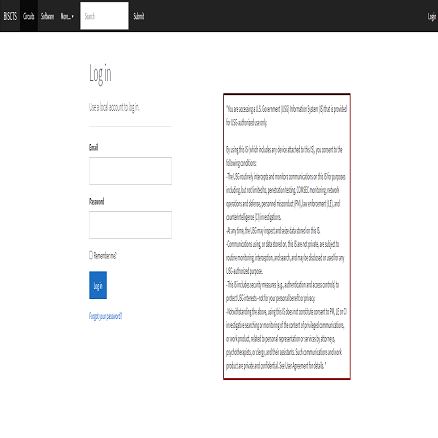
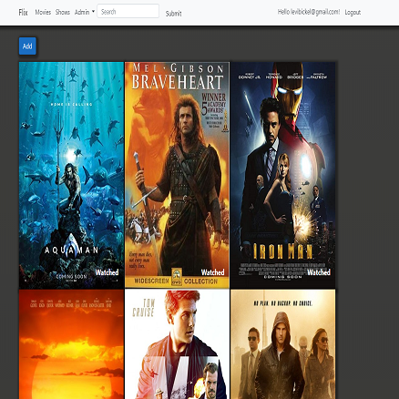
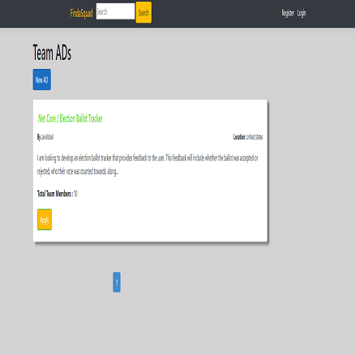
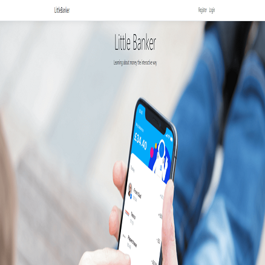

BISCTS
Bickel Integrated SQL Circuits and Trunks Search (BISCTS) was developed to solve inefficiencies that were present tracking new trunks and circuits that were built and deleted. Built using ASP.Net Core MVC.

Bickel Integrated SQL Circuits and Trunks Search (BISCTS) was developed to solve inefficiencies that were present tracking new trunks and circuits that were built and deleted. Built using ASP.Net Core MVC.

Flix was created as a family movie share. A family collaboration site that will act as a digital library for all movies and TV shows owned by the family. Built using ASP.Net Core MVC

Find a Squad was developed as a team collaboration site. This a place for individuals seeking teammates on a project can post an advertisement requesting people to join. Built using ASP.Net Core MVC.

Little Banker was developed as a learning tool for my kids. This simulates a bank account with fake money to teach my kids how money works. Built with ASP.Net Core MVC.
I am an Army veteran, and self-taught programmer. Starting out with micro controllers building robots I moved into C# to control the robots. I then moved into building web applications with ASP.Net Core MVC. I have also created HTML/CSS sites, Python scripts and GUI’s, PowerShell scripts and GUI’s to solve problems.
Created win-forms applications to control robots, hash documents, and interface with SQL databases.
Created web applications using the Model-View-Controller framework. Handling authentication/authorization of users, interfacing with a database, and deploying to IIS for web hosting.
I have used HTML and CSS to create basic sites and modify the base bootstrap in .Net Core web applications.
I have created web crawlers, simple games, webpages, and JSON parsing scripts. I am also looking into starting a machine learning project in the near future.
I have used PowerShell to script heavy workloads like workstation re-imaging and lighter workloads such as solving a security issue, logging connections to network devices.
I have used services such as GitHub to control versioning and also locally using a network attached storage device.